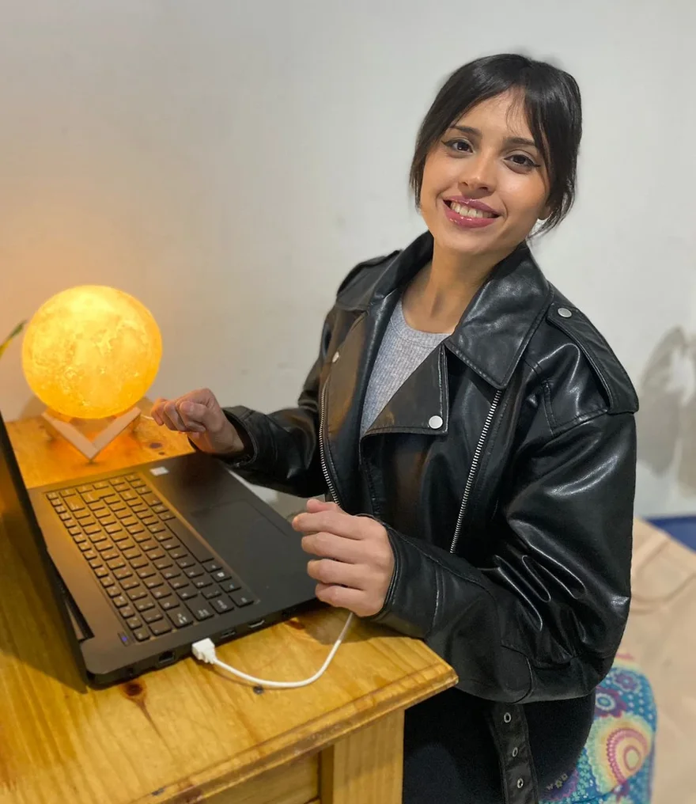

Registros Akáshicos
Abrimos tus Registros para recibir guía sobre lo que hoy te inquieta: vínculos, propósito, bloqueos y decisiones. Un espacio para mirar tu historia con claridad.
Quiero mi lecturaRegistros Akáshicos · Terapias holísticas
Un espacio para explorar tu historia, abrazar la claridad y conectar con la sabiduría de tu alma a través de diferentes terapias holísticas.
Servicios
Elegí cómo preferís tu encuentro y te escribo con todo listo.
Abrimos tus Registros para recibir guía sobre lo que hoy te inquieta: vínculos, propósito, bloqueos y decisiones. Un espacio para mirar tu historia con claridad.
Quiero mi lecturaTécnica de sanación energética que canaliza energía universal para liberar bloqueos, equilibrar cuerpo y emociones y devolverte a tu armonía.
Agendar TameanaEquilibramos tus centros energéticos para que la energía vuelva a fluir y puedas sentirte en eje, liviana, liviano y presente.
Agendar armonizaciónCon el péndulo y las etiquetas hebreas detectamos y liberamos energías densas, bloqueos y cargas que afectan tu bienestar.
Agendar sesiónExploramos el origen emocional de síntomas y conflictos que se repiten, para comprender su mensaje y transformarlos desde la consciencia.
Agendar sesiónProgramas personalizados
Creamos tu bitácora y un programa a tu medida, con prácticas, rituales y seguimiento para sostener tu proceso en el tiempo.
Crear mi bitácoraLos valores se consultan por WhatsApp.

Sobre mí
Una historia de búsqueda, conexión y práctica diaria.
La Chica del Péndulo nació de una búsqueda personal, de un camino de exploración interior y de encuentros con herramientas que transformaron mi manera de mirar la historia.
Lo que comenzó como una experiencia propia se convirtió en un espacio para compartir, acompañar y expandir.
Con el tiempo, dejó de ser solamente un proyecto para convertirse en una tribu, un lugar de encuentro donde la espiritualidad, el autoconocimiento y las experiencias compartidas encuentran su espacio.
Creo en los procesos, en los tiempos de cada persona y en la importancia de permitirnos transitar cada etapa sin exigencias ni apuros.
Hoy, a través de diferentes herramientas holísticas, quiero compartir aquello que despertó mi curiosidad, me abrió nuevas perspectivas y me acercó a mi propia esencia.
Porque cada camino es diferente, cada búsqueda tiene su sentido y cada encuentro puede convertirse en una nueva oportunidad para descubrirnos.
La Chica del Péndulo es una invitación a vivir la experiencia desde la confianza, la responsabilidad y el respeto a nuestros deseos.
Y si hay algo que aprendí en este viaje es que quienes se permiten descubrir la magia, la manifestación de la materia y la consciencia de los nuevos comienzos, están destinados a crear la vida que desean ✨
Somos lo que pensamos.
Somos lo que hacemos repetidamente.
Somos tan conscientes o inconscientes como elijamos ser.
Eres maestro de tu propia vida. Puedes alcanzar lo que deseas.
Modalidades
Podés elegir cómo vivir tu encuentro:
Un espacio dedicado exclusivamente a vos, en Santiago del Estero Capital.
Conectamos desde cualquier lugar del mundo.
Acompañamiento posterior para dar continuidad a tu proceso.
Cómo es una sesión
Elegís la terapia y coordinamos día, horario y modalidad por WhatsApp.
Te mando una pequeña guía para que llegues con tus preguntas claras.
En un espacio cuidado, sin juicios y confidencial, trabajamos juntas, juntos.
Te acompaño después del encuentro para dar continuidad a tu proceso.
Testimonios
“Llegué con mil preguntas sobre mi pareja y me fui con una sola certeza: tenía que elegirme a mí. Dai tiene una calma que te abraza.”
“Era escéptico, lo confieso. La lectura me ayudó a entender por qué repetía siempre la misma historia en el trabajo.”
“La hice online desde España y la sentí igual de cercana. Ahora sigo con mi bitácora personal y el seguimiento me sostiene un montón.”
Escribime y coordinamos tu encuentro, presencial u online.
Tu viaje comienza ahora